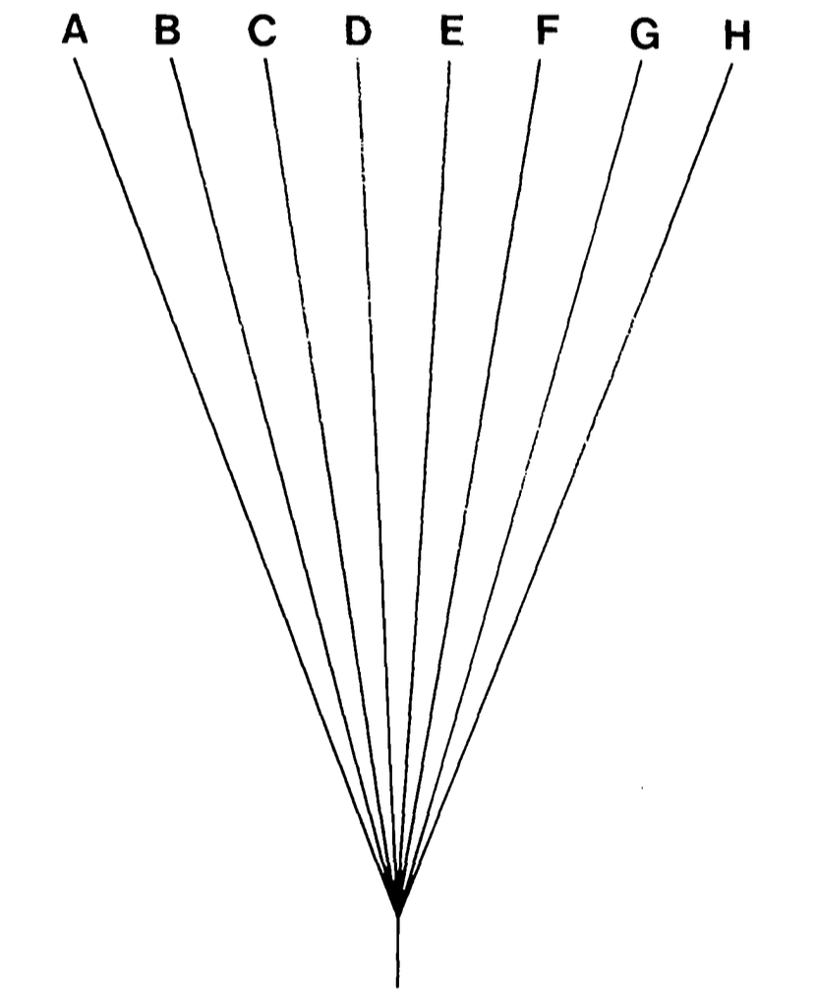
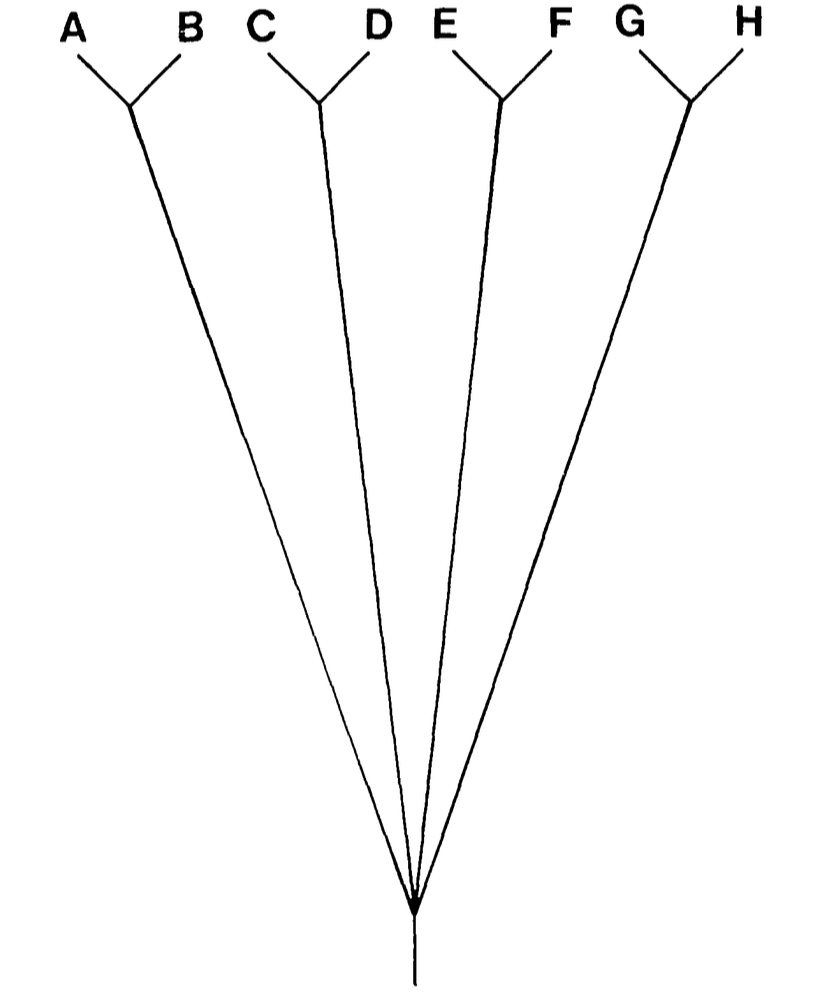

Recall: likelihood and the MLE
- From the substitution models lecture (Week 4): a coin tossed 5 times gives $D=(H,T,T,H,T)$.
- The likelihood of the heads probability $f$:
$$L(f|D) = f^2(1-f)^3$$
- The maximum likelihood estimate is $\hat{f} = 2/5 = 0.4$ (the observed proportion of heads).
- The same idea applies to any model: find the parameter value that makes the data most probable.
The traditional approach: hypothesis testing
- Classical statistics asks: can we reject a null hypothesis?
- Compute a $p$-value: probability of data as extreme as observed, assuming $H_0$.
- Reject $H_0$ if $p < \alpha$ (conventionally $0.05$).
- For our coin: $H_0$: $f = 0.5$, data $D = (H,T,T,H,T)$.
- Two-sided binomial test: $p = 1.0$.
- We fail to reject $H_0$ — and the test has no further answer.
- But the data clearly carries information about $f$: the previous slide gave $\hat{f} = 0.4$.
- And what if we had more data? Would the test tell us what $f$ is — or only whether it differs from $0.5$?
More data: lizard flipping (Harmon, Ch. 2)
- Flip a lizard 100 times: observe 63 heads, 37 tails.
- Two-sided binomial test of $H_0$: $f = 0.5$ gives $p = 0.006$ — reject: the lizard is unfair.
- But what is $f$? Likelihood:
$$L(f|D) = f^{63}(1-f)^{37}$$
- Maximum likelihood estimate: $\hat{f} = 63/100 = 0.63$.
- Same idea as the coin — just with more data the likelihood is much more sharply peaked.
Fitting statistical models to data
- Broadly, parameter estimation is more informative than test-statistics (i.e., $p$-values).
- Rejecting null hypotheses is rarely interesting in biology: the null is often obviously false.
- Recall that the likelihood is:
$$L(H|D) = P(D|H)$$
- In an ML framework, the hypothesis with the highest probability of having generated the data is preferred.
- ML will not always return accurate parameter estimates, even when the data is generated under the actual model.
- As with all estimators, ML improves with more data.
Likelihood Ratio Test
- Can only compare two nested models: one must be a special case of the other.
- Test statistic: $\Delta = 2(\ln L_1 - \ln L_0)$, where $L_1$ is the more complex model.
- Under the null hypothesis, $\Delta \sim \chi^2_k$ where $k$ is the difference in number of parameters.
- Limitations:
- Results can depend on the order in which tests are carried out.
- Can struggle with complex models with many parameters.
- Cannot compare non-nested models.
Akaike Information Criterion (AIC)
- AIC balances model fit against model complexity:
$$\text{AIC} = 2k - 2\ln L$$
where $k$ is the number of estimated parameters.
- AIC assumes that reality is more complex than any of our models: the goal is to identify the model that most efficiently captures the important patterns in the data.
- Lower AIC is better.
- For small sample sizes, use the corrected version:
$$\text{AIC}_c = \text{AIC} + \frac{2k(k+1)}{n-k-1}$$
AIC$_c$ is recommended for general use over generic AIC.
AIC weights
- AIC weights provide a more interpretable way to use AIC outputs.
- For model $i$ in a set of $R$ candidate models:
$$w_i = \frac{e^{-\Delta_i/2}}{\sum_{r=1}^{R} e^{-\Delta_r/2}}$$
where $\Delta_i = \text{AIC}_i - \text{AIC}_{\min}$.
- Can be interpreted as an estimate of the probability that model $i$ is the best model in the set.
- Modern phylogenetic software frequently calculates AIC for model selection (e.g., ModelFinder in IQ-TREE).
Bayes Factors
- From posterior distributions, models can be compared using Bayes Factors:
$$B_{12} = \frac{P(D|H_1)}{P(D|H_2)}$$
- Bayes Factors are ratios of marginal likelihoods $P(D|H)$: the probability of the data averaged over all parameter values, weighted by the prior.
- Unlike ML, this integrates over the full parameter space rather than evaluating only at the best-fit point.
- Tends to favour simpler models than AIC. Assumes the true model is among those tested.

Prior (dotted) and posterior (solid) for the coin example. The marginal likelihood is the normalising constant of the posterior.
Harmon (2019) Phylogenetic Comparative Methods, Fig 2.3 (CC-BY-4.0).
Model selection: summary
| Method |
Compares |
Key assumption |
| Likelihood Ratio Test |
Nested models only |
Null model is true |
| AIC / AIC$_c$ |
Any models |
Truth is more complex than any model |
| Bayes Factors |
Any models |
True model is among candidates |
- AIC and Bayes Factors can disagree: Bayes Factors may prefer a simpler model.
- All methods assume good data and correctly specified candidate models.
Phylogenetic Comparative Methods
What are comparative methods?
- Comparing traits across species, often looking for correlations or causal relationships.
- e.g., two phenotypes across multiple species
- e.g., a phenotype against environment
- Simply plotting traits against each other assumes samples are independent and from the same distribution.
- But species sharing a phylogeny are not independent: closely related species tend to be similar due to shared ancestry.
- We need methods that account for the phylogenetic relationships among species.
Two possible phylogenies for 8 species

Star phylogeny: what naive regression implicitly assumes.

Resolved phylogeny: 4 pairs of close relatives.
Felsenstein, J. (1985) Am Nat 125:1–15, Figs 2 & 3.
The problem of shared ancestry
- Consider 8 taxa: they may seem like 8 independent samples.
- But if they fall into two clades of 4, they are more like 4 independent samples.
- Treating them as independent can be misleading:
- Significance tests are more likely to report significance with 8 points than 4.
- Worst case: two deep lineages, each with many species.
- Sample all you want: you effectively have two data points, not 40.
- It doesn't matter which species you selected within each lineage.
The worst case
40 species in two deep clades of 20. How many independent data points do we really have?
Felsenstein, J. (1985) Am Nat 125:1–15, Fig 5.
An apparent correlation...
A regression of $Y$ on $X$ across 40 species. Looks significant ($P < .05$).
Felsenstein, J. (1985) Am Nat 125:1–15, Fig 6.
...is illusory
Same data, points marked by clade. The "correlation" is just a line between two clade means: effectively only 2 independent points, not 40.
Felsenstein, J. (1985) Am Nat 125:1–15, Fig 7.
Felsenstein's Phylogenetically Independent Contrasts
- Joseph Felsenstein (1985) introduced Phylogenetically Independent Contrasts (PIC) to address non-independence.
- The key insight: species on a shared phylogeny are not necessarily independent, so we must account for phylogeny in our comparative methods.
- This is always a risk except when:
"characters respond essentially instantaneously to natural selection in the current environment,
so that phylogenetic inertia is essentially absent." (Felsenstein 1985)
A quick model: Brownian motion
- To handle the phylogenetic dependence, PIC assumes traits evolve by Brownian motion (BM).
- BM is a random walk in continuous time. After time $t$, starting at $X(0)$:
$$X(t) \sim N\!\left(X(0),\; \sigma^2 t\right)$$
- Key properties:
- No directional trend: the expected value stays at $X(0)$.
- Variance grows linearly with time: long branches accumulate more change.
- The single rate parameter $\sigma^2$ governs how fast the trait changes.
- Why this works for PIC: differences between sister taxa under BM are independent draws from a normal distribution. We will return to BM in depth next lecture.
How PIC works
- Assumes traits are evolving via Brownian motion on the phylogeny.
- Under this model, pairs of sister taxa provide independent samples of evolutionary change.
- Algorithm:
- Take a pair of sister tips and calculate a contrast (difference in trait values).
- Standardise by dividing by the square root of the sum of their branch lengths.
- Prune those tips and replace with a new tip at their ancestor, with an estimated trait value.
- Repeat until no more contrasts can be calculated.
- The resulting contrasts are independent and can be used in standard statistical tests.
Independent contrasts on a tree
Symmetric phylogeny with branch lengths $v_1 \ldots v_{14}$. Contrasts $X_1 - X_2$, $X_3 - X_4$, $\ldots$ are independent; their variances scale with the summed branch lengths.
Felsenstein, J. (1985) Am Nat 125:1–15, Fig 8.
A real comparative dataset
Mammal phylogeny with home range and body mass for each species.
Garland, Harvey & Ives (1992) Syst Biol 41:18–32, Fig 1.
PIC on real data
Regression of standardised contrasts in home range on contrasts in body mass: what PIC looks like on real data. Open circles: ungulates; closed circles: carnivora.
Garland, Harvey & Ives (1992) Syst Biol 41:18–32, Fig 5.
PIC: assumptions and limitations
- Assumes traits evolve by Brownian motion. How reasonable is this?
- Assumes the phylogeny is known without error.
- Assumes the model of evolution (branch lengths, topology) is correct.
- Despite limitations, PIC was a foundational advance:
- Showed that ignoring phylogeny can lead to seriously misleading conclusions.
- Opened the field of phylogenetic comparative methods.
Discussion
- Can you imagine a situation where "phylogenetic inertia is essentially absent"?
- How reasonable is the assumption that traits evolve by Brownian motion?
- You are studying the surface proteins of a human pathogen. The primary selective force is for it to look different from generation to generation. Is PIC appropriate here?
Recommended Reading
- Chapter 8: Traits and Comparative Methods
- Chapter 2: Fitting statistical models
- Chapter 4: Continuous characters on phylogenies